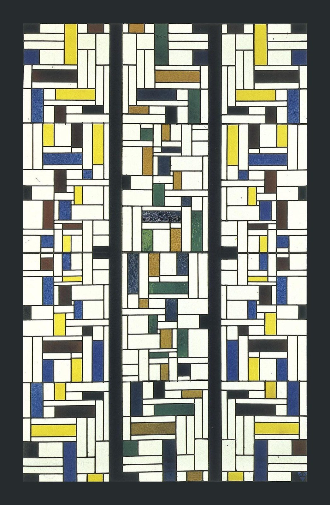

References / Other / 339
Stained-Glass Composition IV
Three tall leaded-glass windows for a house in Alkmaar, made in the movement’s first year: small rectangles of white, yellow, blue, and dark glass arranged in mirrored patterns.
- Source
- Kröller-Müller Museum: Stained-glass composition IV for the De Lange House, Alkmaar
- Creator
- Theo van Doesburg
- Made
- Between 3 May and 9 September 1917
- Style
- De Stijl (agent-proposed, not yet reviewed by a person)
- Moods
- Rhythmic, luminous, ordered
- Evidence
- Inspected the Commons image (1396 × 2135 px, viewed at 1600 px) from Geheugen van Nederland (urn:gvn:ICN01:3492), which shows all three windows on a dark ground. The Kröller-Müller page was found by search and not read.
- Reviewed
- Rights
- Open license, stored. License: public domain. Rights policy
Context
Jan de Lange commissioned the windows for his house at Wilhelminalaan 2, Alkmaar, where they were installed from early September 1917. Each window measures 287 × 56.5 cm. Commons.

The windows passed to the Dutch State (RCE R5533–R5535) and have been on loan to the Kröller-Müller Museum, Otterlo, since 1991. Commons.
Wikidata records the work as Q2460532, dated 1917.
Observed
- Three tall, narrow panels stand side by side on a dark ground.
- Each panel is filled with small rectangles of white glass and of yellow, blue, and very dark glass, divided by thin black lead lines.
- The two outer panels repeat the same pattern as mirror images of each other.
- The middle panel uses green, ochre, and dark blue glass instead of yellow.
- The rectangles form L-shapes and bars that recur down each panel; there are no curves or diagonals.
- A small monogram sits at the bottom right.
Why it belongs
The windows show the style before Mondrian’s large planes: a dense rhythm of small rectangles, closer to a pattern than to a balanced composition.
The lead lines play the part that black lines play in the paintings, which may be one source of the style’s black grid.
Borrow
Repeat a small set of rectangular motifs down a tall strip, and mirror the strip for side panels.
Use thin dark dividers between many small cells for a textured band, and keep large planes for main content.
Measured
Machine-extracted by tools/image-traits.py on . Full measurement.
- Mean chroma
- 0.08
- Palette
- #262b2e 29%
- #f7fbec 29%
- #373a39 4%
- #fffffc 4%
- #e7da45 3%
- #46443d 3%
- #61645a 3%
- #485951 3%

